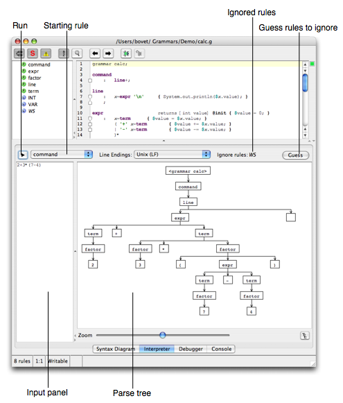

The Interpreter
ANTLRWorks uses the integrated interpreter of ANTLR to parse input text using immediately without the need to generate, compile and run the grammar.

The various elements are:
- Input panel: input text to be parsed.
- Parse tree: this panel displays the parse tree after running the interpreter.
- Run: click this button to run the interpreter.
- Starting rule: select the starting rule of the parser.
- Ignored rules: list of rules to be ignored. A rule is ignored if it has an action with either skip(); or $channel=HIDDEN in it.
- Guess rules to ignore: click this button to update the list of ignored rules.
Limitation
The interpreter does not execute actions. Use the debugger if you want to debug a grammar and see the action executed.